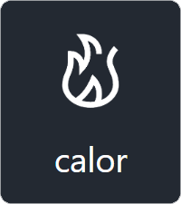
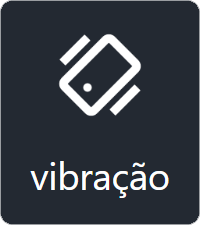
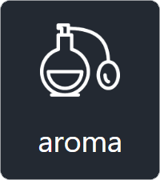

Teste do sistema SensorySynch360 para criação de vídeos multissensoriais em realidade virtual
- O teste tem uma duração estimada de 40 minutos
- Realize o teste em um computador conectado à internet
- Mantenha esta janela aberta durante todo o teste
- Os pr√≥ximos slides cont√™m áudio. Se preferir silenciar, clique no √≠cone üîä acima
- Avance para os próximos slides usando a seta ">" ou o teclado.
Lembre-se de preencher os formulários do teste. Sua opinião é valiosa para nós!
VR Multissensorial
   Entretenimento
Entretenimento
 Saúde e educação
Saúde e educação

Porque não há tantas aplicações VR assim?
1) é difícil
2) demora

Agenda do Teste de Usabilidade
Introdução- Aceite do termo de consentimento
- Questionário inicial
- Etapa 1: tutorial do sistema e uma tarefa
- Questionário 1
- Etapa 2: tutorial de nova funcionalidade e uma tarefa
- Questionário 2
- Conclusão
Termo de Consentimento Livre e Esclarecido
Você está sendo convidado(a) a participar como voluntário(a) da avaliação de um sistema de autoria SensorySynch360, que foi desenvolvida como parte das pesquisas do discente Raphael Abreu para o programa de pós graduação na UFF. OBJETIVO: O principal deste estudo é avaliar a experiência de uso do sistema PROCEDIMENTOS:- Você fará ações no sistema afim de anotar vídeos com efeitos sensoriais no sistema.
- Também apresentaremos 3 questionários para você avaliar a sua experiência com o sistema.
- Lembre-se suas respostas não serão usadas para avaliar você. Você pode cancelar o teste a qualquer momento ao fechar essa janela.
- No total você não levará mais de 50 minutos no estudo
- Não serão feitas perguntas sobre sua identidade.
- Aceitando participar você receberá um identificador único a ser utilizado no estudo. Esse identificador ficará indicado na parte superior da página.
- Os dados obtidos no estudo são confidenciais e não serão divulgados em nível individual.
Obrigado! Prossiga para fazer o questionário abaixo:
Abrir pré-questionário Estima-se uma média de 1 minuto para fazer este questionárioApós terminar, avance para o próximo slide
Etapa 1
Nesta etapa você irá aprender a usar nosso sistema e depois fará uma tarefa de autoria.
Primeiro, siga o tutorial abaixo.
Abrir tutorial 1 Estima-se uma média de 5 minutos para fazer este tutorialApós terminar, avance para o próximo slide
Como realizar as tarefas:
1) Assim que abrir o sistema, você deve clicar no botão [Iniciar teste] para iniciar a tarefa e um vídeo será carregado automaticamente
2) Passe o mouse sobre o botão no meio da tela com o nome [Tarefa 1] para ler a descrição do teste.
Atenção: Vários efeitos sensoriais podem ser necessários para uma experiência completa, mas não precisa ser muito detalhista! Faça a autoria de acordo com o que a tarefa pede.
3) Clique no botão [Finalizar teste] para terminar. Por favor: após [Finalizar teste], espere uma mensagem de confirmação antes de fechar a aba do teste
Tarefa 1
Abrir Estima-se uma média de 7 minutos para fazer esta tarefa
Após terminar, avance para o próximo slide
Questionário 1
Abrir Estima-se uma média de 2 minutos para fazer este questionárioApós terminar, avance para o próximo slide
Etapa 2
Nesta etapa você vai usar uma nova funcionalidade! A extração automática de efeitos sensoriais.
A extração utiliza uma combinação de módulos de inteligência artificial para identificar tipos, locais e momentos de ativação dos efeitos
O objetivo não é que seja totalmente automatizado, mas que a extração automática dê um pontapé inicial para a autoria. Algum refinamento pode ser necessário
Etapa 2
Siga o tutorial abaixo para entender a nova funcionalidade
Abrir tutorial Estima-se uma média de 3 minutos para fazer este tutorialApós terminar, avance para o próximo slide
Tarefa 2
Abrir tarefa Estima-se uma média de 7 minutos para fazer esta tarefa
Após terminar, avance para o próximo slide
Questionário 2
Abrir Estima-se uma média de 3 minutos para fazer este questionárioApós terminar, avance para o próximo slide
Obrigado!
Agradecemos sua participação no teste. Se tiver alguma dúvida ou quiser entrar em contato, pode usar os canais abaixo.
raphael.s.abreu@gmail.com / raphael-abreu.github.io
Follow @raphael-abreu